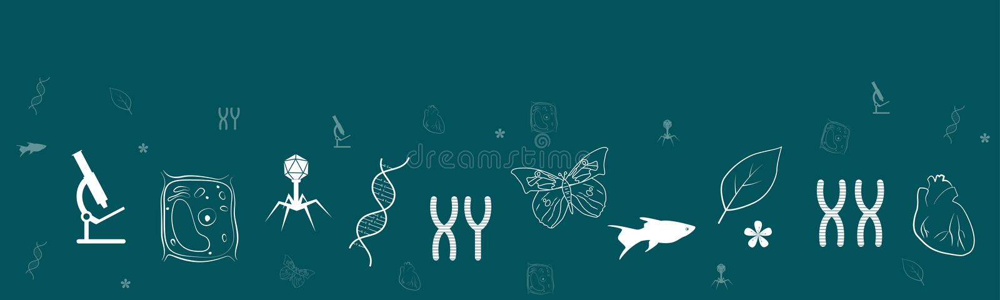
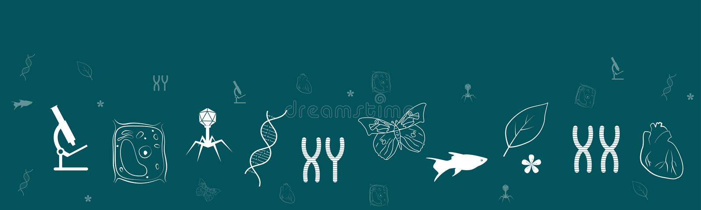
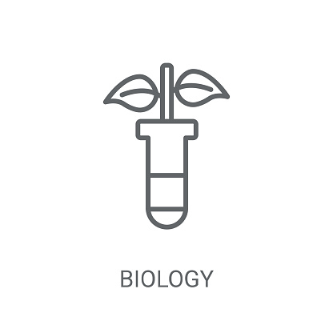
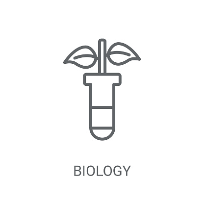
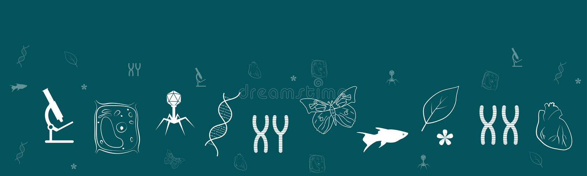
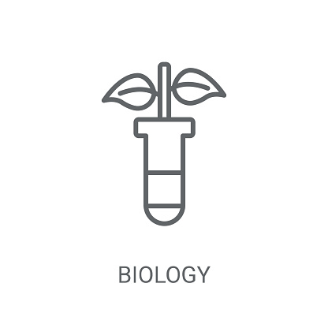

 

Het vak biologie wordt gegeven vanaf de eerste klas. Je kunt het
vak kiezen in de bovenbouw. Vooral wordt het gekozen bij de profielen
NG en NT. Je kunt het ook los als vak kiezen.


Kies uw onderwerp:
In je lichaam vinden vele processn tegelijkertijd plaats. Bovendien reageert je lichaam op gebeurtenissen (veranderingen)
buiten je lichaam. Als je bijvoorbeeld hardloopt, beweegt je en reageer je op je omgeving. Allerei processen, zoals je hartslag
en ademhaling, worden aangepast aan deze activiteit. Dit wordt geregeld door het zintuigenstelsel, hormoonstelsel en zenuwstelsel.
Zij werken samen om de omstandigheden in je lichaam min of meer constant te houden. Dit noemen we homeostase.
In dit thema besteden we aandacht aan de bouw, functie en samenwerking van de verschillende zintuigen,
het hormoonstelsel en het zenuwstelsel.
Gedrag bestaat uit alle activiteiten van een dier of een mens. Gedrag komt tot stand in de interactie tussen een dier
of mens en zijn omgeving en is gedeeltelijk erfelijk bepaald. Onder invloed van individuele variaties in gedrag en door
selectie, ontstaat in de natuur doelmatig gedrag dat een maximale overlevingskans geeft. Bij mensen wordt het gedrag sterk
beïnvloed door leerprocessen en cultuur. Spieren maken gedrag mogelijk.
In dit thema leer je wat gedrag is en hoe het onstaat.
Je gaat gedrag beschrijven en onderzoeken. Als je begrijpt hoe gedrag ontstaat, kun je het doelgericht beïnvoeden. Ook je eigen gedrag!
De informatie voor erfelijke eigenschappen bevindt zich in het DNA. In dit thema leer je hoe DNA
is opgebouwd en hoe informatie in het DNA tot uiting komt in de eigenschappen van een organisme.
Ook behandelen we hoe deze informatie bij de celdeling wordt doorgegeven van moedercel naar dochtercellen.
DNA-moleculen kunnen wijzigingen ondergaan. Dit kan leiden tot andere eigenschappen. Aan het eind van dit thema
gaan we in op de mogelijkheden die er zijn om het DNA van een organisme te veranderen.
Planten spelen een centrale rol in ons leven. Ze worden onmisbaar bij de voedselproductie, vormen de
grootste bron van duurzame energie en worden gebruikt als grondstof voor diverse producten.
In thema 5 Evolutie van deel 4 is het plantenrijk ingedeeld in vijf stammen: wieren, mossen, paardenstaarten,
varens en zaadplanten, en daarvan met name de bedektzadigen. Aan de orde komen de bouw van planten en hoe zij kunnen
overleven in hun omgeving.
Stofwisseling is het totaal van chemische processen die plaatsvinden in cellen. Via passief en actief transport
nemen cellen stoffen op uit hun millie. In cellen ontstaan, onder invloed van enzymen, uit de opgenomen stoffen andere stoffen.
Sommige van deze stoffen spelen een rol in de bouw van de cel. Andere stoffen, waaronder afvalstoffen, geeft de cel af aan zijn millie.
Onder andere planten kunnen energie van zonlicht vastleggen in glucose. De chemische energie in glucose kan vervolgens in een
aantal stappen worden omgezet en worden gebruikt voor het functioneren van de cel.
In dit thema wordt de bouw behandeld van de belangrijkste moleculen die in cellen een rol spelen
Dit thema behandelt de relatie tussen de mens en het millieu. Mensen zijn niet altijd zorgvuldig geweest met het millieu.
Zeker de laatste honderd jaar hebben ze grote delen van de aarde omgezet van natuurgrond in cultuurgrond, bijvoorbeeld
voor landbouw.
Vaak is daarbij schade aan de natuur aangericht en is de bodem uitgeput. Bovendien is het millieu op allerei manieren
verontreinigd. Maar mensen zijn zich steeds meer bewust van deze problemen en zoeken naar manieren en technologieën
om ze op te lossen.
Dit thema behandelt de voornaamste oorzaken van de millieu-problemen, de gevolgen daarvan en wat er wordt gedaan
om het millieu te beschermen